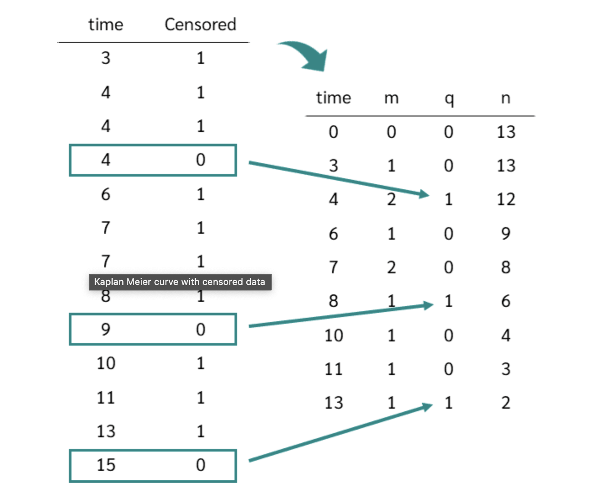
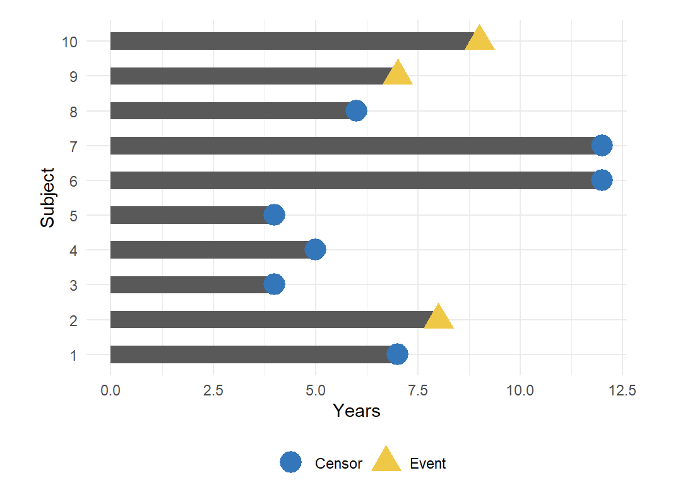
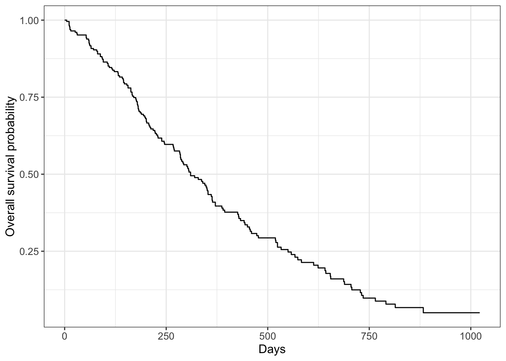
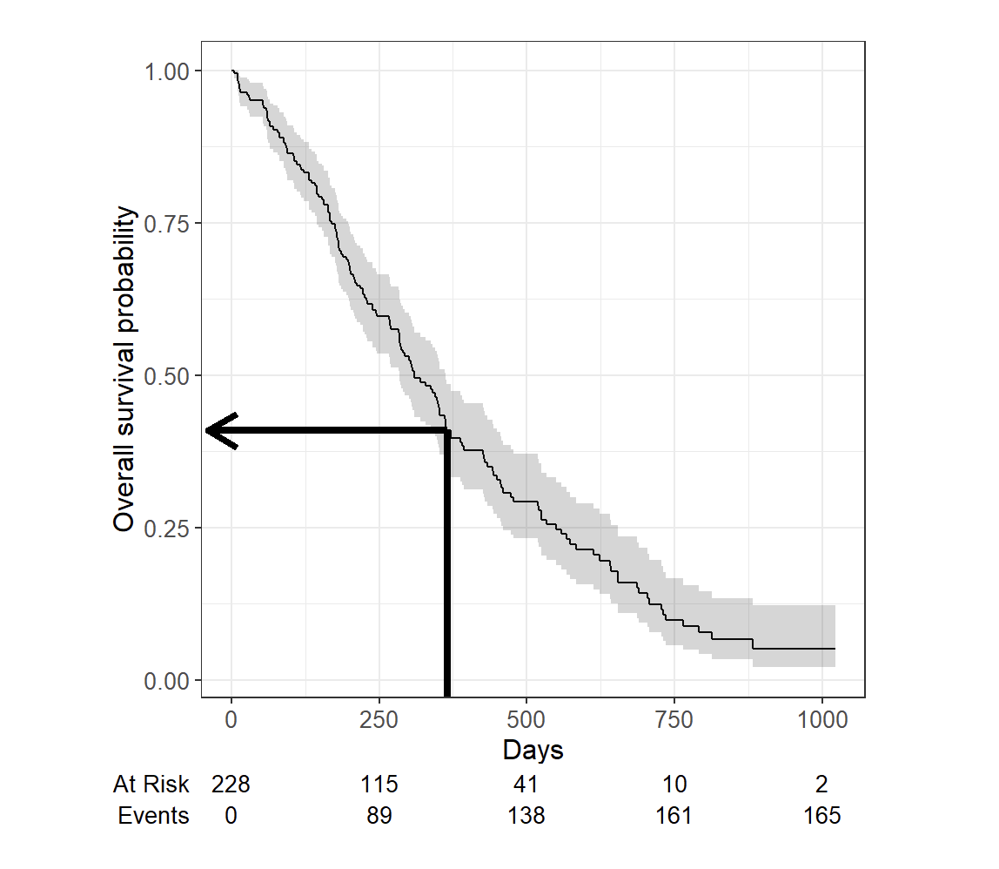
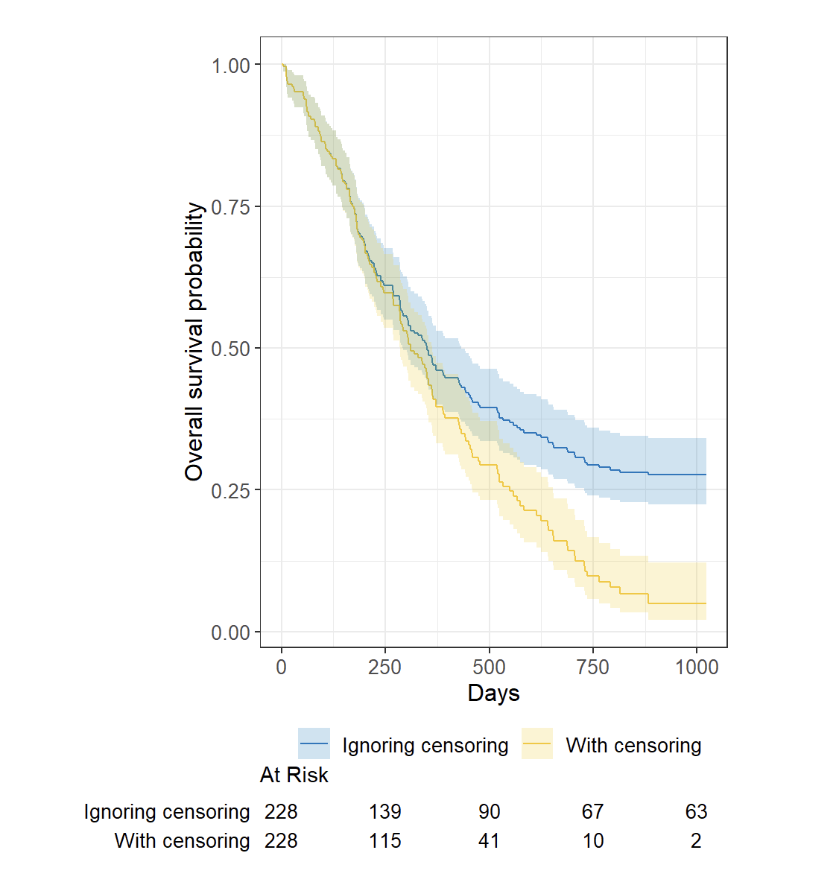
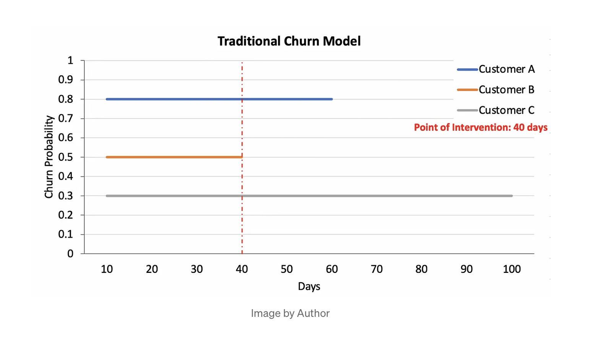

Chapter 2 Machine Learning Fundamentals
2.1 definitions
2.1.1 Data Science
2.1.1.1 What is data science?
At its core, data science is using data to answer questions. This is a pretty broad definition, and that’s because it’s a pretty broad field!
Data science can involve:
• Statistics, computer science, mathematics • Data cleaning and formatting • Data visualization An Economist Special Report sums up this mélange of skills well - they state that a data scientist is broadly defined as someone: “who combines the skills of software programmer, statistician and storyteller slash artist to extract the nuggets of gold hidden under mountains of data” And by the end of these courses, hopefully you will feel equipped to do just that!
2.1.1.2 Why do we need data science?
One of the reasons for the rise of data science in recent years is the vast amount of data currently available and being generated. Not only are massive amounts of data being collected about many aspects of the world and our lives, but we simultaneously have the rise of inexpensive computing. This has created the perfect storm in which we have rich data and the tools to analyse it: Rising computer memory capabilities, better processors, more software and now, more data scientists with the skills to put this to use and answer questions using this data! There is a little anecdote that describes the truly exponential growth of data generation we are experiencing. In the third century BC, the Library of Alexandria was believed to house the sum of human knowledge. Today, there is enough information in the world to give every person alive 320 times as much of it as historians think was stored in Alexandria’s entire collection. And that is still growing.
2.1.1.3 What is big data?
It has been so integral to the rise of data science. There are a few qualities that characterize big data. The first is volume. As the name implies, big data involves large datasets - and these large datasets are becoming more and more routine. For example, say you had a question about online video - well, YouTube has approximately 300 hours of video uploaded every minute! You would definitely have a lot of data available to you to analyse, but you can see how this might be a difficult problem to wrangle all of that data!
And this brings us to the second quality of big data: velocity. Data is being generated and collected faster than ever before. In our YouTube example, new data is coming at you every minute! In a completely different example, say you have a question about shipping times or routes. Well, most transport trucks have real time GPS data available - you could in real time analyse the trucks movements… if you have the tools and skills to do so!
The third quality of big data is variety. In the examples I’ve mentioned so far, you have different types of data available to you. In the YouTube example, you could be analysing video or audio, which is a very unstructured data set, or you could have a database of video lengths, views or comments, which is a much more structured dataset to analyse.
2.1.1.4 1. Descriptive analysis
The goal of descriptive analysis is to describe or summarize a set of data. Whenever you get a new dataset to examine, this is usually the first kind of analysis you will perform. Descriptive analysis will generate simple summaries about the samples and their measurements. You may be familiar with common descriptive statistics: measures of central tendency (eg: mean, median, mode) or measures of variability (eg: range, standard deviations or variance). This type of analysis is aimed at summarizing your sample – not for generalizing the results of the analysis to a larger population or trying to make conclusions. Description of data is separated from making interpretations; generalizations and interpretations require additional statistical steps. Some examples of purely descriptive analysis can be seen in censuses. Here, the government collects a series of measurements on all of the country’s citizens, which can then be summarized. Here, you are being shown the age distribution in the US, stratified by sex.
2.1.1.5 2. Exploratory analysis
The goal of exploratory analysis is to examine or explore the data and find relationships that weren’t previously known. Exploratory analyses explore how different measures might be related to each other but do not confirm that relationship as causitive. You’ve probably heard the phrase “Correlation does not imply causation” and exploratory analyses lie at the root of this saying. Just because you observe a relationship between two variables during exploratory analysis, it does not mean that one necessarily causes the other. Because of this, exploratory analyses, while useful for discovering new connections, should not be the final say in answering a question! It can allow you to formulate hypotheses and drive the design of future studies and data collection, but exploratory analysis alone should never be used as the final say on why or how data might be related to each other.
2.1.1.6 3. Inferential analysis
The goal of inferential analyses is to use a relatively small sample of data to infer or say something about the population at large. Inferential analysis is commonly the goal of statistical modelling, where you have a small amount of information to extrapolate and generalize that information to a larger group.
Inferential analysis typically involves using the data you have to estimate that value in the population and then give a measure of your uncertainty about your estimate. Since you are moving from a small amount of data and trying to generalize to a larger population, your ability to accurately infer information about the larger population depends heavily on your sampling scheme - if the data you collect is not from a representative sample of the population, the generalizations you infer won’t be accurate for the population.
2.1.1.7 4. Predictive analysis
The goal of predictive analysis is to use current data to make predictions about future data. Essentially, you are using current and historical data to find patterns and predict the likelihood of future outcomes. Like in inferential analysis, your accuracy in predictions is dependent on measuring the right variables. If you aren’t measuring the right variables to predict an outcome, your predictions aren’t going to be accurate. Additionally, there are many ways to build up prediction models with some being better or worse for specific cases, but in general, having more data and a simple model generally performs well at predicting future outcomes. All this being said, much like in exploratory analysis, just because one variable may predict another, it does not mean that one causes the other; you are just capitalizing on this observed relationship to predict the second variable. A common saying is that prediction is hard, especially about the future. There aren’t easy ways to gauge how well you are going to predict an event until that event has come to pass; so evaluating different approaches or models is a challenge.
We spend a lot of time trying to predict things - the upcoming weather, the outcomes of sports events, and in the example we’ll explore here, the outcomes of elections. We’ve previously mentioned Nate Silver of FiveThirtyEight, where they try and predict the outcomes of U.S. elections (and sports matches, too!). Using historical polling data and trends and current polling, FiveThirtyEight builds models to predict the outcomes in the next US Presidential vote - and has been fairly accurate at doing so! FiveThirtyEight’s models accurately predicted the 2008 and 2012 elections and was widely considered an outlier in the 2016 US elections, as it was one of the few models to suggest Donald Trump at having a chance of winning.
2.1.1.8 Causal analysis
The caveat to a lot of the analyses we’ve looked at so far is that we can only see correlations and can’t get at the cause of the relationships we observe. Causal analysis fills that gap; the goal of causal analysis is to see what happens to one variable when we manipulate another variable - looking at the cause and effect of a relationship. Generally, causal analyses are fairly complicated to do with observed data alone; there will always be questions as to whether it is correlation driving your conclusions or that the assumptions underlying your analysis are valid. More often, causal analyses are applied to the results of randomized studies that were designed to identify causation. Causal analysis is often considered the gold standard in data analysis, and is seen frequently in scientific studies where scientists are trying to identify the cause of a phenomenon, but often getting appropriate data for doing a causal analysis is a challenge. One thing to note about causal analysis is that the data is usually analysed in aggregate and observed relationships are usually average effects; so, while on average giving a certain population a drug may alleviate the symptoms of a disease, this causal relationship may not hold true for every single affected individual.
2.1.1.9 Experimental Design
Now that we’ve looked at the different types of data science questions, we are going to spend some time looking at experimental design concepts. As a data scientist, you are a scientist and as such, need to have the ability to design proper experiments to best answer your data science questions! What does experimental design mean? Experimental design is organizing an experiment so that you have the correct data (and enough of it!) to clearly and effectively answer your data science question. This process involves clearly formulating your question in advance of any data collection, designing the best set-up possible to gather the data to answer your question, identifying problems or sources of error in your design, and only then, collecting the appropriate data. Why should you care?
2.1.1.10 Confounder:
An extraneous variable that may affect the relationship between the dependent and independent variables. In our example, since age affects foot size and literacy is affected by age, if we see any relationship between shoe size and literacy, the relationship may actually be due to age – age is “confounding” our experimental design! To control for this, we can make sure we also measure the age of each individual so that we can take into account the effects of age on literacy, as well. Another way we could control for age’s effect on literacy would be to fix the age of all participants. If everyone we study is the same age, then we have removed the possible effect of age on literacy.
Age is confounding my experimental design! We need to control for this In other experimental design paradigms, a control group may be appropriate. This is when you have a group of experimental subjects that are not manipulated. So if you were studying the effect of a drug on survival, you would have a group that received the drug (treatment) and a group that did not (control). This way, you can compare the effects of the drug in the treatment versus control group.
A control group is a group of subjects that do not receive the treatment, but still have their dependent variables measured In these study designs, there are other strategies we can use to control for confounding effects. One, we can blind the subjects to their assigned treatment group. Sometimes, when a subject knows that they are in the treatment group (eg: receiving the experimental drug), they can feel better, not from the drug itself, but from knowing they are receiving treatment. This is known as the placebo effect. To combat this, often participants are blinded to the treatment group they are in; this is usually achieved by giving the control group a mock treatment (eg: given a sugar pill they are told is the drug). In this way, if the placebo effect is causing a problem with your experiment, both groups should experience it equally.
Blinding your study means that your subjects don’t know what group they belong to - all participants receive a “treatment” And this strategy is at the heart of many of these studies; spreading any possible confounding effects equally across the groups being compared. For example, if you think age is a possible confounding effect, making sure that both groups have similar ages and age ranges will help to mitigate any effect age may be having on your dependent variable - the effect of age is equal between your two groups. This “balancing” of confounders is often achieved by randomization. Generally, we don’t know what will be a confounder beforehand; to help lessen the risk of accidentally biasing one group to be enriched for a confounder, you can randomly assign individuals to each of your groups. This means that any potential confounding variables should be distributed between each group roughly equally, to help eliminate/reduce systematic errors.
Randomizing subjects to either the control or treatment group is a great strategy to reduce confounders’ effects There is one final concept of experimental design that we need to cover in this lesson, and that is replication. Replication is pretty much what it sounds like, repeating an experiment with different experimental subjects. A single experiment’s results may have occured by chance; a confounder was unevenly distributed across your groups, there was a systematic error in the data collection, there were some outliers, etc. However, if you can repeat the experiment and collect a whole new set of data and still come to the same conclusion, your study is much stronger. Also at the heart of replication is that it allows you to measure the variability of your data more accurately, which allows you to better assess whether any differences you see in your data are significant.
2.1.1.11 Beware p-hacking!
One of the many things often reported in experiments is a value called the p-value. This is a value that tells you the probability that the results of your experiment were observed by chance. This is a very important concept in statistics that we won’t be covering in depth here, if you want to know more, check out this video explaining more about p-values. What you need to look out for is when you manipulate p-values towards your own end. Often, when your p-value is less than 0.05 (in other words, there is a 5 percent chance that the differences you saw were observed by chance), a result is considered significant. But if you do 20 tests, by chance, you would expect one of the twenty (5%) to be significant. In the age of big data, testing twenty hypotheses is a very easy proposition. And this is where the term p-hacking comes from: This is when you exhaustively search a data set to find patterns and correlations that appear statistically significant by virtue of the sheer number of tests you have performed. These spurious correlations can be reported as significant and if you perform enough tests, you can find a data set and analysis that will show you what you wanted to see. Check out this FiveThirtyEight activity where you can manipulate and filter data and perform a series of tests such that you can get the data to find whatever relationship you want! XKCD mocks this concept in a comic testing the link between jelly beans and acne - clearly there is no link there, but if you test enough jelly bean colours, eventually, one of them will be correlated with acne at p-value < 0.05!
2.1.1.12 Data types
Continuous variablesare anything measured on a quantitative scale that could be any fractional number. An example would be something like weight measured in kg.Ordinaldata are data that have a fixed, small (< 100) number of levels but are ordered. This could be for example survey responses where the choices are: poor, fair, good.Categoricaldata are data where there are multiple categories, but they aren’t ordered. One example would be sex: male or female. This coding is attractive because it is self-documenting.Missingdata are data that are unobserved and you don’t know the mechanism. You should code missing values as NA.Censoreddata are data where you know the missingness mechanism on some level. Common examples are a measurement being below a detection limit or a patient being lost to follow-up. They should also be coded as NA when you don’t have the data. But you should also add a new column to your tidy data called, “VariableNameCensored” which should have values of TRUE if censored and FALSE if not.
2.1.1.13 Data scientists in marketing science
Data scientists in marketing science play a crucial role in leveraging data-driven insights to optimize marketing strategies and improve decision-making.
Data scientists in marketing science contribute significantly to the development of targeted, efficient, and impactful marketing campaigns by harnessing the power of data and analytics. Their work helps organizations optimize their marketing spend, enhance customer experiences, and achieve measurable business outcomes.
Here are some key responsibilities and activities that data scientists in marketing science typically engage in:
- Data Analysis:
- Conducting extensive data analysis to understand customer behavior, market trends, and other relevant metrics.
- Utilizing statistical methods and machine learning algorithms to extract meaningful patterns and insights from large datasets.
- Predictive Modeling:
- Developing and deploying predictive models to forecast future trends, customer behavior, and campaign outcomes.
- Using machine learning techniques, such as regression analysis, decision trees, and ensemble methods, to build predictive models.
- Segmentation and Targeting:
- Creating customer segments based on demographics, behavior, and other relevant factors.
- Optimizing marketing strategies by targeting specific segments with personalized and relevant content.
- A/B Testing:
- Designing and conducting A/B tests to evaluate the effectiveness of different marketing strategies, campaigns, or variations.
- Analyzing A/B test results to make data-driven recommendations for optimization.
- Causal Inference:
- Applying advanced causal inference methods to understand the impact of marketing initiatives on customer behavior.
- Assessing the causal relationships between marketing activities and business outcomes.
- Data Visualization:
- Creating clear and compelling data visualizations to communicate complex insights to non-technical stakeholders.
- Using tools like Tableau, Power BI, or custom scripts to visualize data in a meaningful way.
- Optimization Strategies:
- Collaborating with marketing teams to develop and optimize marketing strategies based on data insights.
- Recommending adjustments to campaigns, targeting strategies, and budget allocations for better performance.
- Performance Measurement:
- Developing key performance indicators (KPIs) and metrics to assess the success of marketing campaigns.
- Monitoring and evaluating marketing performance against established benchmarks.
- Data Management:
- Ensuring the quality and integrity of marketing data by cleaning, preprocessing, and validating datasets.
- Collaborating with data engineers to design and implement data pipelines for efficient data processing.
- Communication and Collaboration:
- Effectively communicating findings and insights to non-technical stakeholders, including marketing teams and executives.
- Collaborating with cross-functional teams to align data-driven strategies with overall business objectives.
Overfitting:
Statistical model is too complex
Too many parameters when compared to the total number of observations.
Poor Predictive Performance
Overfitted model overreacts to minor fluctuations in the training data
Underfitting:
Statistical model is too primitive
Poor Predictive Performance in the training model
The underfit model under-reacts to even bigger fluctuations.
Bias:
Bias is an error introduced in your model because of the oversimplification of a machine learning algorithm. It can lead to underfitting.
In supervised learning, underfitting happens when a model unable to capture the underlying pattern of the data. These models usually have high bias and low variance. It happens when we have very less amount of data to build an accurate model or when we try to build a linear model with a nonlinear data.
Also, these kinds of models are very simple to capture the complex patterns in data like Linear and logistic regression.
In supervised learning, overfitting happens when our model captures the noise along with the underlying pattern in data.
It happens when we train our model a lot over noisy dataset. These models have low bias and high variance. These models are very complex like Decision trees which are prone to overfitting.
Bias is the difference between the average prediction of our model and the correct value which we are trying to predict. Model with high bias pays very little attention to the training data and oversimplifies the model. It always leads to high error on training and test data.
What is variance?
Variance is the variability of model prediction for a given data point or a value which tells us spread of our data. Model with high variance pays a lot of attention to training data and does not generalize on the data which it hasn’t seen before. As a result, such models perform very well on training data but has high error rates on test data. (over-fitting issue)
Why is Bias - Variance Trade-off?
If our model is too simple and has very few parameters then it may have high bias and low variance. On the other hand, if our model has large number of parameters then it’s going to have high variance and low bias. So, we need to find the right/good balance without overfitting and underfitting the data.
Name three types of biases that can occur during sampling
In the sampling process, there are three types of biases, which are:
• Selection bias • Under coverage bias • Survivorship bias
Question: What do you understand by the Selection Bias? What are its various types?
Answer: Selection bias is typically associated with research that doesn’t have a random selection of participants. It is a type of error that occurs when a researcher decides who is going to be studied. On some occasions, selection bias is also referred to as the selection effect.
In other words, selection bias is a distortion of statistical analysis that results from the sample collecting method. When selection bias is not taken into account, some conclusions made by a research study might not be accurate. Following are the various types of selection bias:
• Sampling Bias – A systematic error resulting due to a non-random sample of a populace causing certain members of the same to be less likely included than others that results in a biased sample.
• Time Interval – A trial might be ended at an extreme value, usually due to ethical reasons, but the extreme value is most likely to be reached by the variable with the most variance, even though all variables have a similar mean.
• Data – Results when specific data subsets are selected for supporting a conclusion or rejection of bad data arbitrarily.
• Attrition – Caused due to attrition, i.e. loss of participants, discounting trial subjects or tests that didn’t run to completion.
Discuss Decision Tree algorithm A decision tree is a popular supervised machine learning algorithm. It is mainly used for Regression and Classification. It allows breaks down a dataset into smaller subsets. The decision tree can able to handle both categorical and numerical data.
What is Prior probability and likelihood? Prior probability is the proportion of the dependent variable in the data set while the likelihood is the probability of classifying a given observant in the presence of some other variable.
Explain Recommender Systems? It is a subclass of information filtering techniques. It helps you to predict the preferences or ratings which users likely to give to a product.
Question: Please explain Recommender Systems along with an application. Answer: Recommender Systems is a subclass of information filtering systems, meant for predicting the preferences or ratings awarded by a user to some product. An application of a recommender system is the product recommendations section in Amazon. This section contains items based on the user’s search history and past orders.
Name three disadvantages of using a linear model Three disadvantages of the linear model are: • The assumption of linearity of the errors. • You can’t use this model for binary or count outcomes • There are plenty of overfitting problems that it can’t solve
Why do you need to perform resampling?
Resampling is done in below-given cases: • Estimating the accuracy of sample statistics by drawing randomly with replacement from a set of the data point or using as subsets of accessible data • Substituting labels on data points when performing necessary tests • Validating models by using random subsets
- List out the libraries in Python used for Data Analysis and Scientific Computations. SciPy, Pandas, Matplotlib, NumPy, SciKit, Seaborn
- What is Power Analysis? The power analysis is an integral part of the experimental design. It helps you to determine the sample size requires to find out the effect of a given size from a cause with a specific level of assurance. It also allows you to deploy a particular probability in a sample size constraint.
- Explain Collaborative filtering Collaborative filtering used to search for correct patterns by collaborating viewpoints, multiple data sources, and various agents.
- Discuss ‘Naive’ in a Naive Bayes algorithm? The Naive Bayes Algorithm model is based on the Bayes Theorem. It describes the probability of an event. It is based on prior knowledge of conditions which might be related to that specific event.
- What is a Linear Regression? Linear regression is a statistical programming method where the score of a variable ‘A’ is predicted from the score of a second variable ‘B’. B is referred to as the predictor variable and A as the criterion variable.
- State the difference between the expected value and mean value They are not many differences, but both of these terms are used in different contexts. Mean value is generally referred to when you are discussing a probability distribution whereas expected value is referred to in the context of a random variable.
- What the aim of conducting A/B Testing? AB testing used to conduct random experiments with two variables, A and B. The goal of this testing method is to find out changes to a web page to maximize or increase the outcome of a strategy.
- What is Ensemble Learning? The ensemble is a method of combining a diverse set of learners together to improvise on the stability and predictive power of the model. Two types of Ensemble learning methods are:
Bagging Bagging method helps you to implement similar learners on small sample populations. It helps you to make nearer predictions. Boosting Boosting is an iterative method which allows you to adjust the weight of an observation depends upon the last classification. Boosting decreases the bias error and helps you to build strong predictive models. 18. Explain Eigenvalue and Eigenvector Eigenvectors are for understanding linear transformations. Data scientist need to calculate the eigenvectors for a covariance matrix or correlation. Eigenvalues are the directions along using specific linear transformation acts by compressing, flipping, or stretching. Question: Please explain Eigenvectors and Eigenvalues. Answer: Eigenvectors help in understanding linear transformations. They are calculated typically for a correlation or covariance matrix in data analysis. In other words, eigenvectors are those directions along which some particular linear transformation acts by compressing, flipping, or stretching. Eigenvalues can be understood either as the strengths of the transformation in the direction of the eigenvectors or the factors by which the compressions happens.
Define the term cross-validation Cross-validation is a validation technique for evaluating how the outcomes of statistical analysis will generalize for an Independent dataset. This method is used in backgrounds where the objective is forecast, and one needs to estimate how accurately a model will accomplish. Question: Can you compare the validation set with the test set? Answer: A validation set is part of the training set used for parameter selection as well as for avoiding overfitting of the machine learning model being developed. On the contrary, a test set is meant for evaluating or testing the performance of a trained machine learning model.
Explain the steps for a Data analytics project The following are important steps involved in an analytics project: • Understand the Business problem • Explore the data and study it carefully. • Prepare the data for modeling by finding missing values and transforming variables. • Start running the model and analyze the Big data result. • Validate the model with new data set. • Implement the model and track the result to analyze the performance of the model for a specific period.
Question: What do you mean by cluster sampling and systematic sampling? Answer: When studying the target population spread throughout a wide area becomes difficult and applying simple random sampling becomes ineffective, the technique of cluster sampling is used. A cluster sample is a probability sample, in which each of the sampling units is a collection or cluster of elements. Following the technique of systematic sampling, elements are chosen from an ordered sampling frame. The list is advanced in a circular fashion. This is done in such a way so that once the end of the list is reached, the same is progressed from the start, or top, again.
- What is a Random Forest? Random forest is a machine learning method which helps you to perform all types of regression and classification tasks. It is also used for treating missing values and outlier values.
- What is the importance of having a selection bias? Selection Bias occurs when there is no specific randomization achieved while picking individuals or groups or data to be analyzed. It suggests that the given sample does not exactly represent the population which was intended to be analyzed.
- What is the K-means clustering method? K-means clustering is an important unsupervised learning method. It is the technique of classifying data using a certain set of clusters which is called K clusters. It is deployed for grouping to find out the similarity in the data.
- Explain the difference between Data Science and Data Analytics Data Scientists need to slice data to extract valuable insights that a data analyst can apply to real-world business scenarios. The main difference between the two is that the data scientists have more technical knowledge then business analyst. Moreover, they don’t need an understanding of the business required for data visualization.
- Explain p-value? When you conduct a hypothesis test in statistics, a p-value allows you to determine the strength of your results. It is a numerical number between 0 and 1. Based on the value it will help you to denote the strength of the specific result.
- Define the term deep learning Deep Learning is a subtype of machine learning. It is concerned with algorithms inspired by the structure called artificial neural networks (ANN).
- Explain the method to collect and analyze data to use social media to predict the weather condition. You can collect social media data using Facebook, twitter, Instagram’s API’s. For example, for the tweeter, we can construct a feature from each tweet like tweeted date, retweets, list of follower, etc. Then you can use a multivariate time series model to predict the weather condition.
- When do you need to update the algorithm in Data science? You need to update an algorithm in the following situation: • You want your data model to evolve as data streams using infrastructure • The underlying data source is changing If it is non-stationarity
- What is Normal Distribution A normal distribution is a set of a continuous variable spread across a normal curve or in the shape of a bell curve. You can consider it as a continuous probability distribution which is useful in statistics. It is useful to analyze the variables and their relationships when we are using the normal distribution curve.
- Which language is best for text analytics? R or Python? Python will more suitable for text analytics as it consists of a rich library known as pandas. It allows you to use high-level data analysis tools and data structures, while R doesn’t offer this feature.
- Explain the benefits of using statistics by Data Scientists Statistics help Data scientist to get a better idea of customer’s expectation. Using the statistic method Data Scientists can get knowledge regarding consumer interest, behavior, engagement, retention, etc. It also helps you to build powerful data models to validate certain inferences and predictions.
- Name various types of Deep Learning Frameworks • Pytorch • Microsoft Cognitive Toolkit • TensorFlow • Caffe • Chainer • Keras
- Explain why Data Cleansing is essential and which method you use to maintain clean data Dirty data often leads to the incorrect inside, which can damage the prospect of any organization. For example, if you want to run a targeted marketing campaign. However, our data incorrectly tell you that a specific product will be in-demand with your target audience; the campaign will fail.
- What is skewed Distribution & uniform distribution? Skewed distribution occurs when if data is distributed on any one side of the plot whereas uniform distribution is identified when the data is spread is equal in the range.
- When underfitting occurs in a static model? Underfitting occurs when a statistical model or machine learning algorithm not able to capture the underlying trend of the data.
- Name commonly used algorithms. Four most commonly used algorithm by Data scientist are: • Linear regression • Logistic regression • Random Forest • KNN
- What is precision? Precision is the most commonly used error metric is n classification mechanism. Its range is from 0 to 1, where 1 represents 100%
- What is a univariate analysis? An analysis which is applied to none attribute at a time is known as univariate analysis. Boxplot is widely used, univariate model.
- How do you overcome challenges to your findings? In order, to overcome challenges of my finding one need to encourage discussion, Demonstrate leadership and respecting different options.
- Explain cluster sampling technique in Data science A cluster sampling method is used when it is challenging to study the target population spread across, and simple random sampling can’t be applied.
- State the difference between a Validation Set and a Test Set A Validation set mostly considered as a part of the training set as it is used for parameter selection which helps you to avoid overfitting of the model being built. While a Test Set is used for testing or evaluating the performance of a trained machine learning model.
- Explain the term Binomial Probability Formula? “The binomial distribution contains the probabilities of every possible success on N trials for independent events that have a probability of π of occurring.”
- What is a recall? A recall is a ratio of the true positive rate against the actual positive rate. It ranges from 0 to 1.
- Discuss normal distribution Normal distribution equally distributed as such the mean, median and mode are equal.
- While working on a data set, how can you select important variables? Explain Following methods of variable selection you can use: • Remove the correlated variables before selecting important variables • Use linear regression and select variables which depend on that p values. • Use Backward, Forward Selection, and Stepwise Selection • Use Xgboost, Random Forest, and plot variable importance chart. • Measure information gain for the given set of features and select top n features accordingly.
- Is it possible to capture the correlation between continuous and categorical variable? Yes, we can use analysis of covariance technique to capture the association between continuous and categorical variables.
- Treating a categorical variable as a continuous variable would result in a better predictive model? Yes, the categorical value should be considered as a continuous variable only when the variable is ordinal in nature. So, it is a better predictive model. Question: Recall: What is the proportion of actual positives was identified correctly? TP / (TP + FN) Precision: What is the proportion of positive identifications was actually correct? TP / (TP + FP) Question: A false positive is an incorrect identification of the absence of a condition when it is absent. A false negative is an incorrect identification of the absence of a condition when it is actually present. Question: Please explain the goal of A/B Testing. Answer: A/B Testing is a statistical hypothesis testing meant for a randomized experiment with two variables, A and B. The goal of A/B Testing is to maximize the likelihood of an outcome of some interest by identifying any changes to a webpage. A highly reliable method for finding out the best online marketing and promotional strategies for a business, A/B Testing can be employed for testing everything, ranging from sales emails to search ads and website copy. Question: Could you explain how to define the number of clusters in a clustering algorithm? Answer: The primary objective of clustering is to group together similar identities in such a way that while entities within a group are similar to each other, the groups remain different from one another. Generally, the Within Sum of Squares is used for explaining the homogeneity within a cluster. For defining the number of clusters in a clustering algorithm, WSS is plotted for a range pertaining to a number of clusters. The resultant graph is known as the Elbow Curve. The Elbow Curve graph contains a point that represents the point post in which there aren’t any decrements in the WSS. This is known as the bending point and represents K in K–Means. Although the aforementioned is the widely-used approach, another important approach is the Hierarchical clustering. In this approach, dendrograms are created first and then distinct groups are identified from there. Question: Please explain Gradient Descent. Answer: The degree of change in the output of a function relating to the changes made to the inputs is known as a gradient. It measures the change in all weights with respect to the change in error. A gradient can also be comprehended as the slope of a function. Gradient Descent refers to escalating down to the bottom of a valley. Simply, consider this something as opposed to climbing up a hill. It is a minimization algorithm meant for minimizing a given activation function. Question: Please enumerate the various steps involved in an analytics project. Answer: Following are the numerous steps involved in an analytics project: • Understanding the business problem • Exploring the data and familiarizing with the same • Preparing the data for modeling by means of detecting outlier values, transforming variables, treating missing values, et cetera • Running the model and analyzing the result for making appropriate changes or modifications to the model (an iterative step that repeats until the best possible outcome is gained) • Validating the model using a new dataset • Implementing the model and tracking the result for analyzing the performance of the same
Question: What are outlier values and how do you treat them? Answer: Outlier values, or simply outliers, are data points in statistics that don’t belong to a certain population. An outlier value is an abnormal observation that is very much different from other values belonging to the set. Identification of outlier values can be done by using univariate or some other graphical analysis method. Few outlier values can be assessed individually but assessing a large set of outlier values require the substitution of the same with either the 99th or the 1st percentile values. There are two popular ways of treating outlier values: 1. To change the value so that it can be brought within a range 2. To simply remove the value Note: - Not all extreme values are outlier values.
- Discuss Artificial Neural Networks Artificial Neural networks (ANN) are a special set of algorithms that have revolutionized machine learning. It helps you to adapt according to changing input. So the network generates the best possible result without redesigning the output criteria.
- What is Back Propagation? Back-propagation is the essence of neural net training. It is the method of tuning the weights of a neural net depend upon the error rate obtained in the previous epoch. Proper tuning of the helps you to reduce error rates and to make the model reliable by increasing its generalization.
Explain Auto-Encoder
Autoencoders are learning networks. It helps you to transform inputs into outputs with fewer numbers of errors. This means that you will get output to be as close to input as possible. 36. Define Boltzmann Machine Boltzmann machines is a simple learning algorithm. It helps you to discover those features that represent complex regularities in the training data. This algorithm allows you to optimize the weights and the quantity for the given problem. 40. What is reinforcement learning? Reinforcement Learning is a learning mechanism about how to map situations to actions. The end result should help you to increase the binary reward signal. In this method, a learner is not told which action to take but instead must discover which action offers a maximum reward. As this method based on the reward/penalty mechanism.
2.1.2 Bootstrapping
2.1.2.1 Jack-knife
• The jackknife is a tool for estimating standard errors and the bias of estimators
• As its name suggests, the jackknife is a small, handy tool; in contrast to the bootstrap, which is then the moral equivalent of a giant workshop full of tools
• Both the jackknife and the bootstrap involve re-sampling data; that is, repeatedly creating new data sets from the original data
The jackknife deletes each observation and calculates an estimate based on the remaining n − 1 of them
• It uses this collection of estimates to do things like estimate the bias and the standard error
• Note that estimating the bias and having a standard error are not needed for things like sample means, which we know are unbiased estimates of population means and what their standard errors are
It has been shown that the jackknife is a linear approximation to the bootstrap
• Generally do not use the jackknife for sample quantiles like the median; as it has been shown to have some poor properties
The bootstrap
• The bootstrap is a tremendously useful tool for constructing confidence intervals and calculating standard errors for difficult statistics • For example, how would one derive a confidence interval for the median? • The bootstrap procedure follows from the so called bootstrap principle
Suppose that I have a statistic that estimates some population parameter, but I don’t know its sampling distribution • The bootstrap principle suggests using the distribution defined by the data to approximate its sampling distribution • In practice, the bootstrap principle is always carried out using simulation • The general procedure follows by first simulating complete data sets from the observed data with replacement • This is approximately drawing from the sampling distribution of that statistic, at least as far as the data is able to approximate the true population distribution • Calculate the statistic for each simulated data set • Use the simulated statistics to either define a confidence interval or take the standard deviation to calculate a standard error Example • Consider again, the data set of 630 measurements of gray matter volume for workers from a lead manufacturing plant • The median gray matter volume is around 589 cubic centimeters • We want a confidence interval for the median of these measurements • Bootstrap procedure for calculating for the median from a data set of n observations i. Sample n observations with replacement from the observed data resulting in one simulated complete data set ii. Take the median of the simulated data set iii. Repeat these two steps B times, resulting in B simulated medians iv. These medians are approximately draws from the sampling distribution of the median of n observations; therefore we can • Draw a histogram of them • Calculate their standard deviation to estimate the standard error of the median • Take the 2.5th and 97.5th percentiles as a confidence interval for the median
Summary • The bootstrap is non-parametric • However, the theoretical arguments proving the validity of the bootstrap rely on large samples • Better percentile bootstrap confidence intervals correct for bias • There are lots of variations on bootstrap procedures; the book “An Introduction to the Bootstrap” by Efron and Tibshirani is a great place to start for both bootstrap and jackknife information
2.1.3 Classification Models: Evaluation
2.1.3.1 Thresholding
Logistic regression returns a probability. You can use the returned probability “as is” (for example, the probability that the user will click on this ad is 0.00023) or convert the returned probability to a binary value (for example, this email is spam).
A logistic regression model that returns 0.9995 for a particular email message is predicting that it is very likely to be spam. Conversely, another email message with a prediction score of 0.0003 on that same logistic regression model is very likely not spam.
However, what about an email message with a prediction score of 0.6? In order to map a logistic regression value to a binary category, you must define a classification threshold (also called the decision threshold).
A value above that threshold indicates “spam”; a value below indicates “not spam.” It is tempting to assume that the classification threshold should always be 0.5, but thresholds are problem-dependent, and are therefore values that you must tune.
Note: “Tuning” a threshold for logistic regression is different from tuning hyperparameters such as learning rate. Part of choosing a threshold is assessing how much you’ll suffer for making a mistake. For example, mistakenly labeling a non-spam message as spam is very bad. However, mistakenly labeling a spam message as non-spam is unpleasant, but hardly the end of your job.
2.1.3.2 Confusion Matrix
| Predicted Positive | Predicted Negative | |
|---|---|---|
| Actual Positive | TP | FN |
| Actual Negative | FP | TN |
True Positive: Model predicted positive and it is true.
True negative: Model predicted negative and it is true.
False positive (Type 1 Error): Model predicted positive but it is false.
False negative (Type 2 Error): Model predicted negative and it is true.
False Positive Rate (FPR):
The False Positive Rate is the ratio of false positive predictions to the total number of actual negatives. It measures the rate at which the model incorrectly predicts the positive class among the instances that are actually negative.
\(FPR = \frac{FP}{TN + FP}\)
True Positive Rate (TPR), Sensitivity, or Recall:
The True Positive Rate is the ratio of true positive predictions to the total number of actual positives. It measures the ability of the model to correctly predict the positive class among instances that are actually positive.
\(Recall (TPR) = \frac{TP}{TP + FN}\)
Accuracy:
It represents the ratio of correctly predicted instances to the total number of instances. The accuracy metric is suitable for balanced datasets where the classes are evenly distributed. It is calculated using the following formula:
\(Accuracy = \frac{TP + TN}{TP + TN + FP + FN}\)
Accuracy provides a general sense of how well a model is performing across all classes. It is easy to understand and interpret, making it a commonly used metric, especially when the classes are balanced.
However, accuracy may not be an ideal metric in situations where the class distribution is imbalanced. In imbalanced datasets, where one class significantly outnumbers the other, a high accuracy might be achieved by simply predicting the majority class. In such cases, other metrics like precision, recall, F1 score, or area under the receiver operating characteristic (ROC-AUC) curve may be more informative.
Precision:
Precision is the ratio of true positive predictions to the total number of positive predictions made by the model. It represents the accuracy of the positive predictions made by the model.
\(Precision = \frac{TP}{TP + FP}\)
F1 Measure:
The F1 score is a metric commonly used in binary classification to provide a balance between precision and recall. It is the harmonic mean of precision and recall, combining both measures into a single value. The F1 score is particularly useful when there is an uneven class distribution or when both false positives and false negatives are important considerations.
The F1 score is useful in situations where achieving a balance between precision and recall is important, as it penalizes models that have a significant imbalance between these two metrics.
\(F1 score = 2 \times \frac{Precision \times Recall}{Precision + Recall}\)
2.1.3.3 In Marketing
Precision:
In marketing, precision is valuable when the cost or impact associated with false positives (incorrectly identifying a non-lookalike as a lookalike) is high. For example, if targeting a non-lookalike with a marketing campaign has significant costs, you want to minimize false positives.
Recall:
In marketing, recall is important when you want to ensure that you are not missing potential opportunities (actual lookalikes). If missing a true lookalike has a high cost or lost opportunity, you want to maximize recall.
2.2 Elastic Net Model
Elastic Net is a regularization technique that combines both L1 (Lasso) and L2 (Ridge) regularization penalties in a linear regression model. This technique is commonly used in machine learning, especially when dealing with high-dimensional datasets or situations where some of the features are highly correlated.
In elastic net regularization, the objective function is a combination of the L1 and L2 regularization terms along with the linear regression loss. The regularization strength is controlled by two hyperparameters, often denoted as α α (alpha) and λ λ (lambda):
α α controls the mixing between L1 and L2 regularization. When α = 0 α=0, it is equivalent to Ridge regression, and when α = 1 α=1, it is equivalent to Lasso regression. Any value in between (0 and 1) allows for a mixture of both. λ λ controls the overall strength of the regularization.
In R, you can fit an elastic net model using the glmnet package. Here’s a brief example:
# Install and load the glmnet package if not already installed
# install.packages("glmnet")
library(glmnet)
# Generate some example data
set.seed(42)
n <- 100
p <- 10
X <- matrix(rnorm(n * p), nrow = n, ncol = p)
beta_true <- c(2, 0, 1, 0, 0, 3, 0, 0, -2, 0)
y <- X %*% beta_true + rnorm(n)
# Fit an elastic net model
alpha <- 0.5 # You can adjust alpha to control the mixture of L1 and L2 regularization
lambda <- 0.1 # You can adjust lambda to control the overall strength of regularization
enet_model <- cv.glmnet(X, y, alpha = alpha, lambda = lambda)2.3 Survival Analysis
2.3.1 References
Web Sources
A short course on Survival Analysis applied to the Financial Industry
An Introduction to Survival Statistics: Kaplan-Meier Analysis
pdf references
2. Introduction to Survival Analysis in Practice
3. Chapter 7 - Survival Models
2.3.2 Time to event analysis
Time to event analysis has also been used widely in the social sciences where interest is on analyzing time to events such as job changes, marriage, birth of children and so forth.
There are certain aspects of survival analysis data, such as censoring and non-normality, that generate great difficulty when trying to analyze the data using traditional statistical models such as multiple linear regression.
The non-normality aspect of the data violates the normality assumption of most commonly used statistical model such as regression or ANOVA, etc.
A censored observation is defined as an observation with incomplete information. When an observation is right censored it means that the information is incomplete because the subject did not have an event during the time that the subject was part of the study.
The point of survival analysis is to follow subjects over time and observe at which point in time they experience the event of interest.
It often happens that the study does not span enough time in order to observe the event for all the subjects in the study. This could be due to a number of reasons. Perhaps subjects drop out of the study for reasons unrelated to the study (i.e. patients moving to another area and leaving no forwarding address).
The common feature of all of these examples is that if the subject had been able to stay in the study then it would have been possible to observe the time of the event eventually.
Type of censoring - Right truncation - Right censoring - Left truncation - Left censoring
In survival analysis, censoring refers to situations where the event of interest (e.g., death, failure, or another outcome) is not observed for some subjects during the study period. There are two main types of censoring: right truncation and right censoring.
- Right Truncation:
- Definition: Right truncation occurs when individuals enter the study at different times, and some individuals have already experienced the event of interest before the study begins.
- Example: Consider a study on the time until a machine fails. If the study starts at a certain date, and some machines have already failed before that date, those machines are considered right-truncated because their failure times are not observed in the study.
- Right Censoring:
- Definition: Right censoring occurs when individuals are followed for a certain period, but the event of interest does not occur for some of them by the end of the study.
- Example: In a clinical trial studying the time until disease recurrence, if a patient has not experienced recurrence by the end of the study period or is lost to follow-up, their survival time is right-censored. The exact time of recurrence is not known for these patients.
In summary, right truncation involves incomplete observation due to some subjects entering the study late, whereas right censoring occurs when the event of interest has not occurred for some subjects by the end of the study. Both types of censoring are common in survival analysis and need to be appropriately accounted for in statistical models to obtain unbiased estimates of survival probabilities and hazard rates.
What is survival data?
Time-to-event data that consist of a distinct start time and end time.
Examples from cancer • Time from surgery to death • Time from start of treatment to progression • Time from response to recurrence
Examples from other fields
Time-to-event data are common in many fields including, but not limited to • Time from HIV infection to development of AIDS • Time to heart attack • Time to onset of substance abuse • Time to initiation of sexual activity • Time to machine malfunction
Types of censoring
A subject may be censored due to: • Loss to follow-up • Withdrawal from study • No event by end of fixed study period
Specifically these are examples of right censoring.
Left censoring and interval censoring are also possible, and methods exist to analyze this type of data.
2.3.3 Kaplan-Meier
The Kaplan-Meier curve is commonly used to analyze time-to-event data, such as the time until death or the time until a specific event occurs. For this, the Kaplan Meier curve graphically represent the survival rate or survival function. Time is plotted on the x-axis and the survival rate is plotted on the y-axis.
2.3.3.1 Survival rate
Suppose you’re a dental technician and you want to study the “survival time” of a filling in a tooth.
So your start time is the moment when a person goes to the dentist for a filling, and your end time, the event, is the moment when the filling breaks. The time between these two events is the focus of your study.

For example, you may be interested in the probability that your filling will last longer than 5 years.
To do this, you read off the value at 5 years on the graph, which is the survival rate.
At 5 years, the Kaplan-Meier curve gives you a value of 0.7.
So there is a 70% chance that your filling will last longer than 5 years.2.3.3.2 Interpreting the Kaplan-Meier curve
The Kaplan-Meier curve shows the cumulative survival probabilities.
A steeper slope indicates a higher event rate (death rate) and therefore a worse survival prognosis. A flatter slope indicates a lower event rate and therefore a better survival prognosis. The curve may have plateaus or flat areas, indicating periods of relatively stable survival.
If there are multiple curves representing different groups, you can compare their shapes and patterns. If the curves are parallel, it suggests that the groups have similar survival experiences. If the curves diverge or cross, it indicates differences in survival between the groups.
At specific time points, you can estimate the survival probability by locating the time point on the horizontal axis and dropping a vertical line to the curve. Then, read the corresponding survival probability from the vertical axis.
2.3.3.3 Calculating the Kaplan-Meier curve
Let’s say the filling lasted 3 years for the first subject, 4 years for the second subject, 4 years for the third subject, and so on.

Let’s assume that none of the cases are “censored”. The data are already arranged so that the shortest survival time is at the top and the longest at the bottom.
Now we create a second table that we can use to draw the Kaplan-Meier curve. To do this, we look at the time points in the left table and add the time zero. So we have the time points 0, then 3, 4, 6, 7, 8 11 and 13. In total we have 10 subjects.
Now we look at how many fills break out at each time. We enter this in the column m. So at time 0, no fillings were broken out. After 3 years, there were one broken fillings, after 4 years there were two, after 6 years there was one. We now do the same for all the other times.
Next, we look at the number of cases that have survived to the time plus the number of cases where the event occurs at the exact time. We enter this in column n.
So n is the number of cases that survived to that point, plus the people who dropped out at that exact point.
After zero years we still have all 10 people. After 3 years, we get 10 for n, 9 people still have their fill intact, and one person’s fill broke out exactly after 3 years.
The easiest way to get n is to take the previous n value and subtract the previous m value. So we get 10 - 1 equals 9. Then 9 minus 2 equals 7, 7 - 1 equals 6… and so on and so forth.
From column n we can now calculate the survival rates. To do this, we simply divide n by the total number, i.e. 10.
So 10 divided by 10 is equal to 1, 9 divided by 10 is equal to 0.9, 7 divided by 10 is equal to 0.7. Now we do the same for all the others.
2.3.3.4 Draw Kaplan Meier curve
We can now plot the Kaplan-Meier curve. At time 0 we have a value of 1, after 3 years we have a value of 0.9 or 90%. After 4 years we get 0.7, after 6 years 0.6 and so on and so forth.

From the Kaplan-Meier curve, we can now see what percentage of the filling has not broken out after a certain time.
2.3.3.5 Censored data
Censored data has been added to the example in these three places.

We now need to enter this data into our Kaplan-Meier curve table. We do this as follows: We create our m exactly as we did before, looking at how many cases failed at each time point.
Now we add a column q, in which we enter how many cases were censored at each time.
Note that the time at which each censored case occurred does not get its own row, but is assigned to the previous time.

Let’s look at this case. The censoring took place at time 9. In this table, however, there is no event with nine years and we also don’t add it. The person is added at time 8.
We can now re-calculate the values for the survival curve. If we have censored data, this is a little more complex.
For this, we write down the values in the first step. We get these values by calculating n-m/n. In the third row, for example, we get the value 10/12 with 12-2 by 12.
The calculation of the real value is iterative. To do this, we multiply the result from the previous row by the value we have just calculated.
So, in the first row we get 1, now we calculate 12/13 times 1, which is equal to 0.923. In the next row we calculate 10/12 times 0.923 and get a value of 0.769. We take this value again for the next row.
We do this for all the rows. We can then plot the Kaplan-Meier curve with this data in the same way as before.
2.3.3.6 Comparing different groups
If you are comparing several groups or categories (e.g. treatment groups), the Kaplan-Meier curve consists of several lines, each representing a different group. Each line shows the estimated survival rate for that particular group. To test whether there is a statistically significant difference between the groups, the log-rank test can be used.
If you have several factors and you want to see if they have an effect on the curve, you can calculate a Log Rank Test or calculate a Cox Regression here on DATAtab.
2.3.3.7 Kaplan-Meier curve assumptions
Random or Non-informative censoring: This assumption states that the occurrence of censoring is unrelated to the likelihood of experiencing the event of interest. In other words, censoring should be random and not influenced by factors that affect the event outcome. If censoring is not non-informative, the estimated survival probabilities may be biased.
Independence of censoring: This assumption assumes that the censoring times of different individuals are independent of each other. This means that the occurrence or timing of censoring for one participant should not provide any information about the censoring times for other participants.
Survival probabilities do not change over time: The Kaplan-Meier curve assumes that the survival probabilities estimated at each time point remain constant over time. This assumption may not be valid if there are time-varying factors or treatments that can influence survival probabilities.
No competing risks: The Kaplan-Meier curve assumes that the event of interest is the only possible outcome and there are no other competing events that could prevent the occurrence of the event being studied. Competing events can include other causes of death or events that render the occurrence of the event of interest impossible.
2.3.4 The basics of Survival Analysis
library(knitr)
library(dplyr)
library(survival)
library(ggplot2)
library(tibble)
# devtools::install_github("zabore/ezfun")
ezfun::set_ccf_palette("contrast")## <environment: R_GlobalEnv>Survival data are time-to-event data that consist of a distinct start time and end time.
Examples from cancer:
- Time from surgery to death
- Time from start of treatment to progression
- Time from response to recurrence
- Time-to-event data are common in many other fields.
Some other examples include:
- Time from HIV infection to development of AIDS
- Time to heart attack
- Time to onset of substance abuse
- Time to initiation of sexual activity
- Time to machine malfunction
Because time-to-event data are common in many fields, it also goes by names besides survival analysis including:
- Reliability analysis
- Duration analysis
- Event history analysis
- Time-to-event analysis
A key feature of survival data is censoring.
Censoring occurs if a subject has not experienced the event of interest by the end of data collection.
A subject may be censored due to:
- Loss to follow-up
- Withdrawal from study
- No event by end of fixed study period
Specifically these are examples of right censoring.
Left censoring and interval censoring are also possible, and methods exist to analyze these types of data, but this tutorial will be focus on right censoring.
To illustrate the impact of censoring, suppose we have the following data:

How would we compute the proportion who are event-free at 10 years?
- Subjects 6 and 7 were event-free at 10 years.
- Subjects 2, 9, and 10 had the event before 10 years.
- Subjects 1, 3, 4, 5, and 8 were censored before 10 years, so we don’t know whether they had the event or not at 10 years. But we know something about them - that they were each followed for a certain amount of time without the event of interest prior to being censored.
Survival analysis techniques provide a way to appropriately account for censored patients in the analysis.
##
## Attaching package: 'lubridate'## The following objects are masked from 'package:base':
##
## date, intersect, setdiff, union##
## Attaching package: 'tidycmprsk'## The following object is masked from 'package:gtsummary':
##
## trialThe lung dataset
Throughout this section, we will use the lung dataset from the survival package as example data. The data contain subjects with advanced lung cancer from the North Central Cancer Treatment Group. We will focus on the following variables throughout this tutorial:
**time:** Observed survival time in days
**status:** censoring status 1=censored, 2=dead
**sex:** 1=Male, 2=Female## time status sex
## 1 306 2 1
## 2 455 2 1
## 3 1010 1 1
## 4 210 2 1
## 5 883 2 1
## 6 1022 1 1Note that the status is coded in a non-standard way in this dataset. Typically you will see 1=event, 0=censored. Let’s recode it to avoid confusion:
lung1 <-
lung %>%
mutate(
status = recode(status, '1' = 0, '2' = 1)
)
head(lung[, c("time", "status", "sex")])## time status sex
## 1 306 2 1
## 2 455 2 1
## 3 1010 1 1
## 4 210 2 1
## 5 883 2 1
## 6 1022 1 1Now we have:
time: Observed survival time in days
status: censoring status 0=censored, 1=dead
sex: 1=Male, 2=FemaleNote: the Surv() function in the {survival} package accepts by default TRUE/FALSE, where TRUE is event and FALSE is censored; 1/0 where 1 is event and 0 is censored; or 2/1 where 2 is event and 1 is censored. Please take care to ensure the event indicator is properly formatted.
Calculating survival times
Data will often come with start and end dates rather than pre-calculated survival times. The first step is to make sure these are formatted as dates in R.
Let’s create a small example dataset with variables sx_date for surgery date and last_fup_date for the last follow-up date:
date_ex <-
tibble(
sx_date = c("2007-06-22", "2004-02-13", "2010-10-27"),
last_fup_date = c("2017-04-15", "2018-07-04", "2016-10-31")
)
date_ex## # A tibble: 3 × 2
## sx_date last_fup_date
## <chr> <chr>
## 1 2007-06-22 2017-04-15
## 2 2004-02-13 2018-07-04
## 3 2010-10-27 2016-10-31We see these are both character variables, but we need them to be formatted as dates.
We will use the {lubridate} package to work with dates. In this case, we need to use the ymd() function to change the format, since the dates are currently in the character format where the year comes first, followed by the month, and followed by the day.
date_ex1 <-
date_ex %>%
mutate(
sx_date = ymd(sx_date),
last_fup_date = ymd(last_fup_date)
)
date_ex1## # A tibble: 3 × 2
## sx_date last_fup_date
## <date> <date>
## 1 2007-06-22 2017-04-15
## 2 2004-02-13 2018-07-04
## 3 2010-10-27 2016-10-31Now that the dates are formatted, we need to calculate the difference between start and end dates in some units, usually months or years. Using the {lubridate} package, the operator %--% designates a time interval, which is then converted to the number of elapsed seconds using as.duration() and finally converted to years by dividing by dyears(1), which gives the number of seconds in a year.
date_ex2 <-
date_ex1 %>%
mutate(
observed_yrs = as.duration(sx_date %--% last_fup_date) / dyears(1)
)
date_ex2## # A tibble: 3 × 3
## sx_date last_fup_date observed_yrs
## <date> <date> <dbl>
## 1 2007-06-22 2017-04-15 9.82
## 2 2004-02-13 2018-07-04 14.4
## 3 2010-10-27 2016-10-31 6.012.3.4.1 Creating survival objects and curves
The Kaplan-Meier method is the most common way to estimate survival times and probabilities. It is a non-parametric approach that results in a step function, where there is a step down each time an event occurs.
Lets see the data again:
## time status
## 1 306 2
## 2 455 2
## 3 1010 1
## 4 210 2
## 5 883 2The Surv() function from the {survival} package creates a survival object for use as the response in a model formula. There will be one entry for each subject that is the survival time, which is followed by a + if the subject was censored.
Let’s look at the first 10 observations:
## [1] 306 455 1010+ 210 883 1022+ 310 361 218 166We see that subject 1 had an event at time 306 days, subject 2 had an event at time 455 days, subject 3 was censored at time 1010 days, etc.
The survfit() function creates survival curves using the Kaplan-Meier method based on a formula. Let’s generate the overall survival curve for the entire cohort, assign it to object s1, and look at the structure using str():
## List of 16
## $ n : int 228
## $ time : num [1:186] 5 11 12 13 15 26 30 31 53 54 ...
## $ n.risk : num [1:186] 228 227 224 223 221 220 219 218 217 215 ...
## $ n.event : num [1:186] 1 3 1 2 1 1 1 1 2 1 ...
## $ n.censor : num [1:186] 0 0 0 0 0 0 0 0 0 0 ...
## $ surv : num [1:186] 0.996 0.982 0.978 0.969 0.965 ...
## $ std.err : num [1:186] 0.0044 0.00885 0.00992 0.01179 0.01263 ...
## $ cumhaz : num [1:186] 0.00439 0.0176 0.02207 0.03103 0.03556 ...
## $ std.chaz : num [1:186] 0.00439 0.0088 0.00987 0.01173 0.01257 ...
## $ type : chr "right"
## $ logse : logi TRUE
## $ conf.int : num 0.95
## $ conf.type: chr "log"
## $ lower : num [1:186] 0.987 0.966 0.959 0.947 0.941 ...
## $ upper : num [1:186] 1 1 0.997 0.992 0.989 ...
## $ call : language survfit(formula = Surv(time, status) ~ 1, data = lung)
## - attr(*, "class")= chr "survfit"n: There are 228 subjects in the data.
time: Distinct time points.
n.risk: Number of cases that have survived to the time plus the number of cases where the event occurs at the exact time.
n.event: Number of event happened at the time.
2.3.4.2 Kaplan-Meier plots/Curves
The Kaplan Meier curve graphically represent the survival rate or survival function.
We will use the {ggsurvfit} package to generate Kaplan-Meier plots.
This package aims to ease plotting of time-to-event endpoints using the power of the {ggplot2} package. See http://www.danieldsjoberg.com/ggsurvfit/index.html for details.
Note: alternatively, survival plots can be created using base R or the {survminer} package.
The {ggsurvfit} package works best if you create the survfit object using the included ggsurvfit::survfit2() function, which uses the same syntax to what we saw previously with survival::survfit().
The ggsurvfit::survfit2() tracks the environment from the function call, which allows the plot to have better default values for labeling and p-value reporting.
survfit2(Surv(time, status) ~ 1, data = lung) %>%
ggsurvfit() +
labs(
x = "Days",
y = "Overall survival probability"
)
The default plot in ggsurvfit() shows the step function only.
We can add the confidence interval using add_confidence_interval():
survfit2(Surv(time, status) ~ 1, data = lung) %>%
ggsurvfit() +
labs(
x = "Days",
y = "Overall survival probability"
) +
add_confidence_interval()Typically we will also want to see the numbers at risk in a table below the x-axis.
We can add this using add_risktable():
survfit2(Surv(time, status) ~ 1, data = lung) %>%
ggsurvfit() +
labs(
x = "Days",
y = "Overall survival probability"
) +
add_confidence_interval() +
add_risktable()Plots can be customized using many standard {ggplot2} options.
2.3.4.3 Estimating x-year survival
One quantity often of interest in a survival analysis is the probability of surviving beyond a certain number of years, x.
For example, to estimate the probability of surviving to 1 year, use summary with the times argument
(Note: the time variable in the lung data is actually in days, so we need to use times = 365.25)
## Call: survfit(formula = Surv(time, status) ~ 1, data = lung)
##
## time n.risk n.event survival std.err lower 95% CI upper 95% CI
## 365 65 121 0.409 0.0358 0.345 0.486We find that the 1-year probability of survival in this study is 41%.The associated lower and upper bounds of the 95% confidence interval are also displayed.
The 1-year survival probability is the point on the y-axis that corresponds to 1 year on the x-axis for the survival curve.

What happens if you use a “naive” estimate? Here “naive” means that the patients who were censored prior to 1-year are considered event-free and included in the denominator.
121 of the 228 patients in the lung data died by 1 year so the “naive” estimate is calculated as:
\[(1−\frac{121}{228})×100=47\%\]
You get an incorrect estimate of the 1-year probability of survival when you ignore the fact that 42 patients were censored before 1-year.
Recall the correct estimate of the 1-year probability of survival, accounting for censoring using the Kaplan-Meier method, was 41%.
Ignoring censoring leads to an overestimate of the overall survival probability.
Imagine two studies, each with 228 subjects. There are 165 deaths in each study. Censoring is ignored in one (blue line), censoring is accounted for in the other (yellow line).
The censored subjects only contribute information for a portion of the follow-up time, and then fall out of the risk set, thus pulling down the cumulative probability of survival. Ignoring censoring erroneously treats patients who are censored as part of the risk set for the entire follow-up period.

We can produce nice tables of x-time survival probability estimates using the tbl_survfit() function from the {gtsummary} package:
survfit(Surv(time, status) ~ 1, data = lung) %>%
tbl_survfit(
times = 365.25,
label_header = "**1-year survival (95% CI)**"
)| Characteristic | 1-year survival (95% CI) |
|---|---|
| Overall | 41% (34%, 49%) |
2.3.4.4 Estimating median survival time
Another quantity often of interest in a survival analysis is the average survival time, which we quantify using the median. Survival times are not expected to be normally distributed so the mean is not an appropriate summary.
We can obtain the median survival directly from the survfit object:
## Call: survfit(formula = Surv(time, status) ~ 1, data = lung)
##
## n events median 0.95LCL 0.95UCL
## [1,] 228 165 310 285 363We see the median survival time is 310 days The lower and upper bounds of the 95% confidence interval are also displayed.
Median survival is the time corresponding to a survival probability of 0.5:

What happens if you use a “naive” estimate? Here “naive” means that you exclude the censored patients from the calculation entirely to estimate median survival time among the patients who have had the event.
Summarize the median survival time among the 165 patients who died:
## median_surv
## 1 284You get an incorrect estimate of median survival time of 284 days when you ignore the fact that censored patients also contribute follow-up time.
Recall the correct estimate of median survival time is 310 days.
Ignoring censoring will lead to an underestimate of median survival time because the follow-up time that censored patients contribute is excluded (blue line). The true survival curve accounting for censoring in the lung data is shown in yellow for comparison.

We can produce nice tables of median survival time estimates using the tbl_survfit() function from the {gtsummary} package:
survfit(Surv(time, status) ~ 1, data = lung) %>%
tbl_survfit(
probs = 0.5,
label_header = "**Median survival (95% CI)**"
)| Characteristic | Median survival (95% CI) |
|---|---|
| Overall | 310 (285, 363) |
2.3.4.5 Comparing survival times between groups
We can conduct between-group significance tests using a log-rank test.
The log-rank test equally weights observations over the entire follow-up time and is the most common way to compare survival times between groups. There are versions that more heavily weight the early or late follow-up that could be more appropriate depending on the research question (see ?survdiff for different test options).
We get the log-rank p-value using the survdiff function. For example, we can test whether there was a difference in survival time according to sex in the lung data:
## Call:
## survdiff(formula = Surv(time, status) ~ sex, data = lung)
##
## N Observed Expected (O-E)^2/E (O-E)^2/V
## sex=1 138 112 91.6 4.55 10.3
## sex=2 90 53 73.4 5.68 10.3
##
## Chisq= 10.3 on 1 degrees of freedom, p= 0.001We see that there was a significant difference in overall survival according to sex in the lung data, with a p-value of p = 0.001.
require("survival")
library("survminer")
fit <- survfit(Surv(time, status) ~ sex, data = lung)
ggsurvplot(fit, data = lung)
ggsurvplot(
fit,
data = lung,
size = 1, # change line size
palette =
c("#E7B800", "#2E9FDF"),# custom color palettes
conf.int = TRUE, # Add confidence interval
pval = TRUE, # Add p-value
risk.table = TRUE, # Add risk table
risk.table.col = "strata",# Risk table color by groups
legend.labs =
c("Male", "Female"), # Change legend labels
risk.table.height = 0.25, # Useful to change when you have multiple groups
ggtheme = theme_bw() # Change ggplot2 theme
)2.3.4.6 The Cox regression model
We may want to quantify an effect size for a single variable, or include more than one variable into a regression model to account for the effects of multiple variables.
The Cox regression model is a semi-parametric model that can be used to fit univariable and multivariable regression models that have survival outcomes.
\[h(t|Xi)=h0(t)exp(β1Xi1+⋯+βpXip)\]
- \(h(t)\)
- hazard, or the instantaneous rate at which events occur h0(t)
- underlying baseline hazard
Some key assumptions of the model:
non-informative censoring proportional hazards
Note: parametric regression models for survival outcomes are also available, but they won’t be addressed here.
We can fit regression models for survival data using the coxph() function from the {survival} package, which takes a Surv() object on the left hand side and has standard syntax for regression formulas in R on the right hand side.
## Call:
## coxph(formula = Surv(time, status) ~ sex, data = lung)
##
## coef exp(coef) se(coef) z p
## sex -0.5310 0.5880 0.1672 -3.176 0.00149
##
## Likelihood ratio test=10.63 on 1 df, p=0.001111
## n= 228, number of events= 165We can obtain tables of results using the tbl_regression() function from the {gtsummary} package, with the option to exponentiate set to TRUE to return the hazard ratio rather than the log hazard ratio:
| Characteristic | HR1 | 95% CI1 | p-value |
|---|---|---|---|
| sex | 0.59 | 0.42, 0.82 | 0.001 |
| 1 HR = Hazard Ratio, CI = Confidence Interval | |||
The quantity of interest from a Cox regression model is a hazard ratio (HR). The HR represents the ratio of hazards between two groups at any particular point in time.
The HR is interpreted as the instantaneous rate of occurrence of the event of interest in those who are still at risk for the event. It is not a risk, though it is commonly mis-interpreted as such. If you have a regression parameter β, then \(HR = exp(β)\)
A HR < 1 indicates reduced hazard of death whereas a HR > 1 indicates an increased hazard of death.
So the HR = 0.59 implies that 0.59 times as many females are dying as males, at any given time. Stated differently, females have a significantly lower hazard of death than males in these data.
2.3.5 Prosper Loan data
##
## Attaching package: 'data.table'## The following objects are masked from 'package:lubridate':
##
## hour, isoweek, mday, minute, month, quarter, second, wday, week,
## yday, year## The following objects are masked from 'package:dplyr':
##
## between, first, last2.3.6 Customer Churn
It usually costs more to acquire a customer than it does to retain a customer.
Focusing on customer retention enables companies to maximize customer revenue over their lifetime.
These models are seldom done optimally as they rely on binary classification flags (churn yes or no). Churn classification models do not tell WHEN a customer is likely to leave but only indicate that it’s going to happen within a certain number of days or months.
In the churn classification model, we don’t usually account for the differences in time.
It is probably a mistake to treat a customer that is at risk of leaving in 40 days the same as a customer that remains for over a 100 days. Traditional churn modeling does not make this differentiation.

As it fails to account for time, we have no clear idea at what point a marketing intervention is needed and it causes preventable customer attrition.
The only point in time here is the “within 40 days” threshold. As it fails to account for time, we have no clear idea at what point a marketing intervention is needed and it causes preventable customer attrition.
2.3.6.1 Re-framing the Problem to Know When
Rather then use a binary classifier, we are going to re-frame the problem as time-dependent one. This enables us to intervene at the right time to stop customer attrition before it happens.
No longer relying on thresholds, we now set churn as continuous time conditioned event. As the below graph shows, we now know the time that attrition risk is most likely to happen.

No longer is time held constant, we now track risk over time to determine when a marketing intervention is needed to retain the customer.
If we model for both the time and event, the right moment to intervene and prevent attrition is apparent. A modeling technique called Survival Analysis allows for us to do this and with the advent of modern Machine Learning, it’s now a trivial task.
# %reload_ext autoreload
# %autoreload 2
# %matplotlib inline
import xgboost as xgb
import shap
import sksurv.metrics as surv_metrics
from sksurv.datasets import get_x_y
from lifelines import KaplanMeierFitter
from lifelines.plotting import plot_lifetimes
import numpy as np
import pandas as pd
import seaborn as sns
from matplotlib import pyplot as plt
from sklearn.compose import ColumnTransformer
from sklearn.exceptions import DataConversionWarning
from sklearn.impute import SimpleImputer
from sklearn.model_selection import train_test_split
from sklearn.pipeline import Pipeline
from sklearn.preprocessing import OneHotEncoder, StandardScaler
plt.rcParams['figure.figsize'] = [7.2, 4.8]
pd.set_option("display.float_format", lambda x: "%.4f" % x)
sns.set_style('darkgrid')
SEED = 123df = pd.read_csv("../../data/churn.txt")
# denoting churn and duration
df["event"] = np.where(df["churn?"] == "False.", 0, 1)
df = df.rename(columns={"account_length": "duration"})
del df['churn?']
df = df.dropna()
df = df.drop_duplicates()
df.head()print("Total Records:",df.shape[0],"\n")
print("Percent Churn Rate:",df.event.mean())
print("")
print("Duration Intervals")
print(df['duration'].describe())For Survival models data is different from a traditional classification problem and requires: - A Censor — For our purposes these are customers who’ve yet to churn. Read about right censoring here.
Duration — The duration or time t of the customer’s activity. In this case, it’s Account Length in days.
Event — The binary target, in this case if they terminated their phone plan marked by Churn? .
ax = plot_lifetimes(df.head(10)['duration'], df.head(10)['event'])
_=ax.set_xlabel("Duration: Account Length (days)") _=ax.set_ylabel("Customer Number") _=ax.set_title("Observed Customer Attrition")
In the above plot, the red lines indicates when a customer has left with the dots indicating the specific point in time.
Blue lines are customers that are still active up to the time measured on the x-axis in Duration.
Here we see that customer number 8 did not attrit until up to 195 days, with customer numbers 0 and 4 leaving in 163 and 146 days respectively. All other customers are still active.
Notice how all customers are set on the same time scale because the data is analytically aligned. Each customer might have come in at different times but we’ve set the days as the same.
This is what allowed us to right-censor the data on the churn event. Real world data needs both censoring and aligning before modeling can begin.
2.3.6.2 The Risk of Churn
A more informative approach might be to estimate the Survival Function or the time in days a customer has until they attrit. For this purpose, we will use a Kaplan Meier Estimator to calculate how long until attrition occurs. The estimator is defined as:

Where \(𝑑_𝑖\) are the number of churn events at time \(𝑡\) and \(𝑛_𝑖\) is the number of customers at risk of churn just prior to time \(𝑡\).
We will use the great python package lifelines to plot the Survival Function as the function is a component of the final churn model.
kmf = KaplanMeierFitter()
kmf.fit(df['duration'], event_observed=df['event'])
kmf.plot_survival_function()
_=plt.title('Survival Function for Telco Churn'); _=plt.xlabel("Duration: Account Length (days)")
_=plt.ylabel("Churn Risk (Percent Churned)")
_=plt.axvline(x=kmf.median_survival_time_, color='r',linestyle='--')
Let’s look at the median survival time. This is the point by which half of customers have churned out. According to this graph, where it’s marked by the red dotted line, by about 152 days half of customers churn.
This is helpful because it gives overall baseline when intervention is needed. However, for each individual customer this is uninformative. What is missing is the point in time in which churn risk is highest for each customer.
For that we will create a model using Cox’s Proportional Hazard which uses a log-risk function \(h(x)\). The Hazard function is conditioned on rate of a customers remaining until time t or later, this allows to estimate the risk of churn overtime.
This will enable us to score each customer and anticipate when a marketing intervention is needed. However, before we proceed to that, we need to preprocess the data.
2.3.6.3 Data Splitting and Preprocessing
First we will split the data into training and testing. We’ll use the testing set as the validation for the example.
In practice, you want all three of these splits so that you don’t tune to the validation set.Next, we take the numeric features and categorical features and then preprocess them for downstream modeling.
In the case of categories, we will first impute with the constant and then simply one-hot encode them. In the case of numerics, we will fill with the median then standardize them between values of 0 and 1. This is all wrapped into Sklearn’s Pipeline and ColumnTransformer for simplicity’s sake. As part of the Churn Pipeline all these steps are included with the final preprocessor saved for use at inference time.
2.3.7 Deploying a Scalable End to End Customer Churn Prediction Solution with AWS
Wouldn’t it be great if you could hold onto customers longer, maximizing their lifetime revenue?
In this blog post, you will deploy an End to End Customer Churn Prediction solution using AWS services.
from pyspark.sql import SparkSession
from pyspark import SparkFiles
from pyspark.ml.classification import LogisticRegression
from pyspark.ml.evaluation import BinaryClassificationEvaluator, MulticlassClassificationEvaluator
from pyspark.ml.tuning import CrossValidator, ParamGridBuilder
from pyspark.ml.feature import VectorAssemblermy_appname = "LogisticRegression with PySpark MLlib"
spark = SparkSession.builder.appName(my_appname).getOrCreate()# Load data
url = "https://raw.githubusercontent.com/pkmklong/Breast-Cancer-Wisconsin-Diagnostic-DataSet/master/data.csv"
spark.sparkContext.addFile(url)
df = spark.read.csv(SparkFiles.get("data.csv"), header=True, inferSchema=True)
# df.show()# Rename columns and map diagnosis to label
columns = ['id', 'diagnosis'] + [f'feature_{i}' for i in range(1, 32)]
data = df.toDF(*columns)
data = data.withColumn("label", (data["diagnosis"] == "M").cast("integer")).drop("diagnosis")# Assemble features into a single vector
feature_columns = [f'feature_{i}' for i in range(1, 25)]
assembler = VectorAssembler(inputCols=feature_columns, outputCol="features")
data = assembler.transform(data)# Split data into training and test sets
train_data, test_data = data.randomSplit([0.8, 0.2], seed=42)
# Build the Logistic Regression model
logistic_regression = LogisticRegression(featuresCol="features", labelCol="label")
model = logistic_regression.fit(train_data)# AUC-ROC
evaluator = BinaryClassificationEvaluator(rawPredictionCol="rawPrediction", labelCol="label")
auc = evaluator.evaluate(predictions)# Accuracy, Precision, and Recall
multi_evaluator = MulticlassClassificationEvaluator(labelCol="label", predictionCol="prediction")
accuracy = multi_evaluator.evaluate(predictions, {multi_evaluator.metricName: "accuracy"})
precision = multi_evaluator.evaluate(predictions, {multi_evaluator.metricName: "weightedPrecision"})
recall = multi_evaluator.evaluate(predictions, {multi_evaluator.metricName: "weightedRecall"})
print(f"AUC-ROC: {auc:.4f}")## AUC-ROC: 0.9989## Accuracy: 0.9651## Precision: 0.9653## Recall: 0.9651